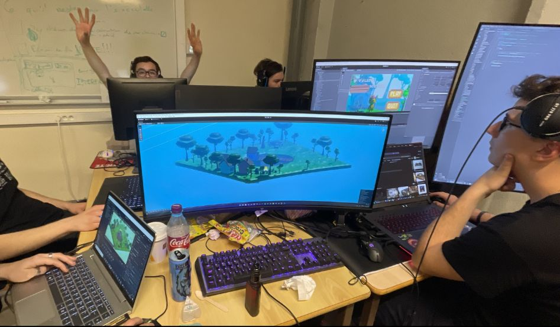
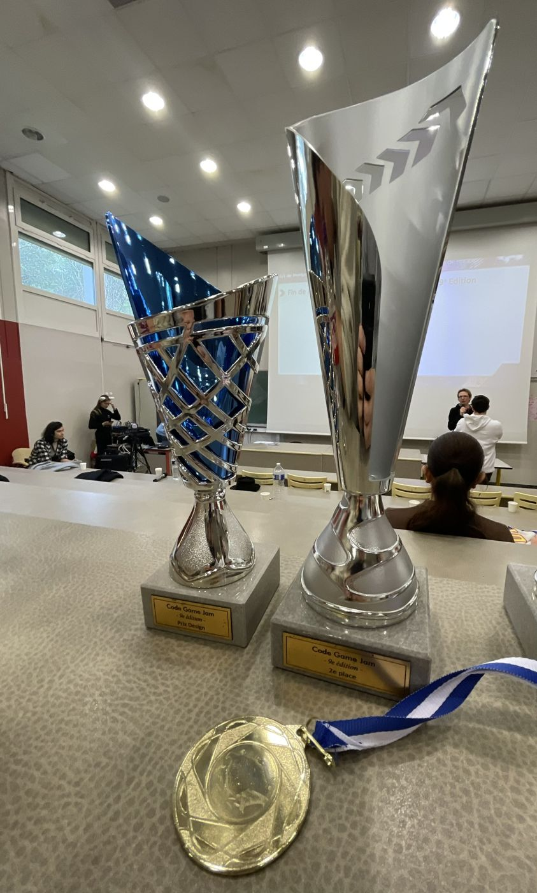

Projets / 23–25 janvier 2025 · 9ᵉ édition
Code Game Jam 2025.
30 heures non-stop à l'Ob.i LAB, campus de Montpellier, sur le thème imposé « Mélodie à l'Infini ».
- Durée
- 30 h
- Équipe
- 6 étudiants
- Outils
- Unity · Blender · GitHub
- Résultat
- Prix design global · 2ᵉ local

Le concept
Une réinterprétation des Quatre Saisons de Vivaldi en 8-bit : la carte évolue toutes les 30 secondes, au rythme des saisons.
Contraintes : thème imposé, délai très court, exécutable autonome à livrer.
Mon rôle
- Game design : définition et ajustement des mécaniques principales pour garder un gameplay cohérent en 30 h.
- Modélisation 3D (Blender) : éléments visuels adaptés au concept et au rythme du jeu.
- Intégration : mise en place des assets et des comportements dans le jeu pour livrer un prototype jouable.
Une difficulté
Un gros conflit Git : à un moment, j'étais le seul à conserver une version viable, les autres avaient perdu la leur.
J'en retiens l'importance d'une gestion de version rigoureuse (synchronisation fréquente, intégration progressive, vigilance sur les merges) et de prévenir vite l'équipe quand un blocage la met en danger.
Résultat
Un prototype jouable, pas entièrement terminé, mais un concept clair récompensé par le jury : Prix design global et 2ᵉ place locale (site de Montpellier).


C6 Collaborer Jouer sur itch.io →